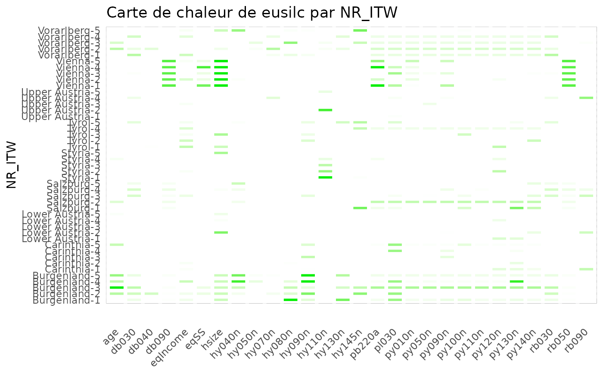
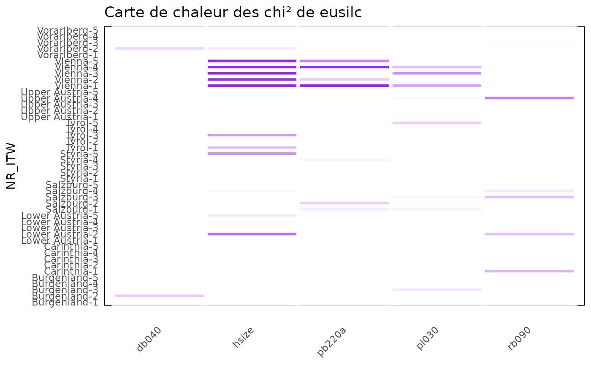
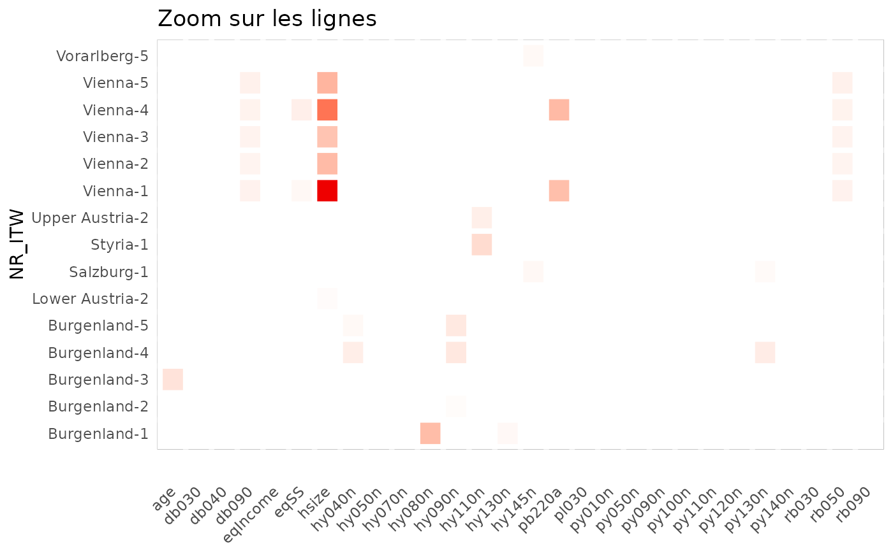
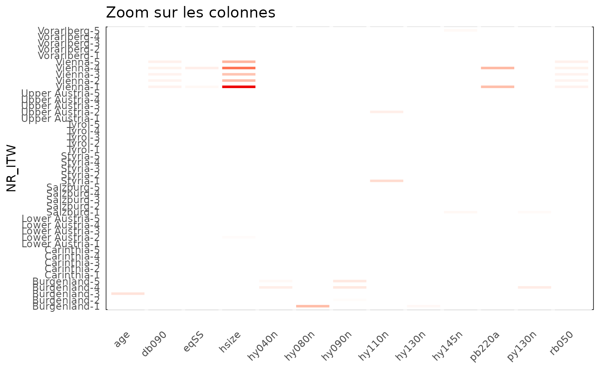
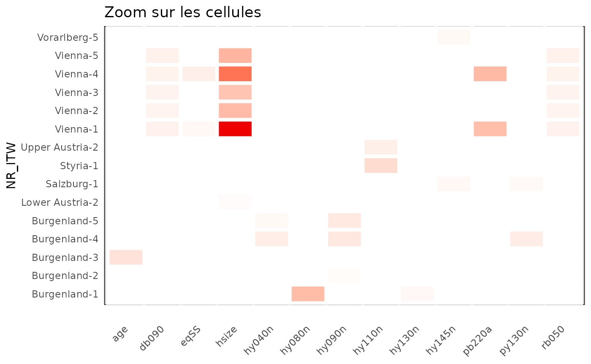
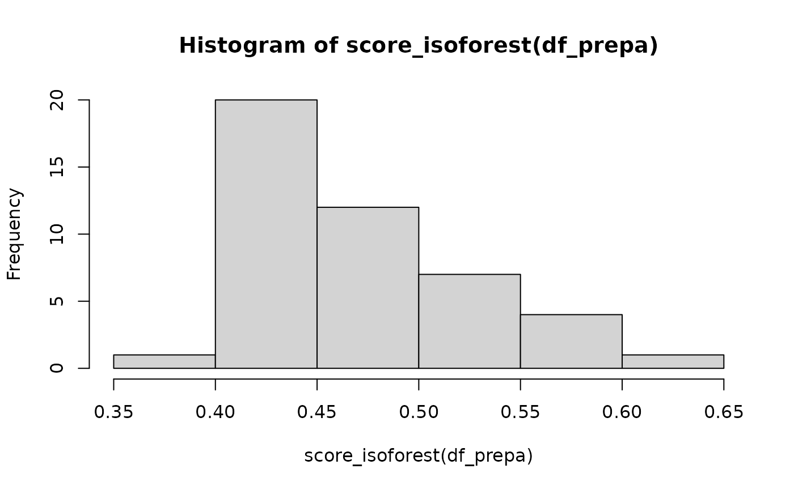

Introduction
Cette vignette présente les fondements méthodologiques et les calculs sous-jacents à l’application {vizsurvey}. Comme expliqué dans la première vignette, {vizsurvey} n’a pas pour objectif de réaliser des tests statistiques ou de produire des résultats interprétés : il s’agit avant tout d’un outil d’exploration et de diagnostic, positionné entre la collecte et l’analyse des données dans le cycle du GSBPM. Autrement dit, {vizsurvey} n’infère rien ; il organise la lecture et met en évidence les points qui méritent une attention particulière.
Les calculs réalisés dans {vizsurvey} reposent sur des mesures simples mais robustes, telles que les distances, les rangs, les écarts types ou les écarts relatifs entre distributions. Ces mesures servent de repères visuels pour identifier d’éventuelles incohérences : variations anormales d’une vague à l’autre, écarts entre enquêteur·rices, changements brusques de distribution ou hausses inattendues du taux de non-réponse. Elles ne visent pas à produire un verdict statistique, mais à guider la réflexion analytique.
L’ensemble des fonctions utilisées dans {vizsurvey} a été conçu pour être applicable à tout type de variable, qu’elle soit catégorielle (codes, modalités, réponses à choix) ou numérique (valeurs continues, durées, âges, revenus). L’objectif est de fournir un cadre de calcul générique, reproductible et robuste, permettant d’assurer la comparabilité des résultats entre enquêtes, années ou domaines. La priorité a toujours été donnée à la stabilité des indicateurs et à la simplicité des formules, afin de faciliter leur lecture et leur appropriation par les équipes de terrain comme par les analystes.
Ces choix méthodologiques ne sont pas figés : ils ont été progressivement affinés au sein de Statbel, sur base des premiers résultats produits par l’interface. Les retours d’expérience des responsables d’enquête, les échanges entre services, ainsi que plusieurs références issues de la littérature sur la qualité des enquêtes ont guidé l’évolution des fonctions.
La publication de ce package vise à partager ces choix. En rendant publiques les formules, les fonctions et la logique de calcul, nous souhaitons favoriser la transparence, encourager la réutilisation et stimuler les contributions d’autres équipes confrontées à des problématiques similaires. Notre ambition est de construire, avec d’autres instituts de statistique et organismes de sondage, une base commune d’outils et de pratiques pour le monitoring des enquêtes, en intégrant les retours des enquêteur·rices et des responsables d’enquête et des méthodologues.
Les exemples fournis dans cette vignette se baseront sur la base de
données eusilc du package {laeken}. Ce fichier ne contient
pas d’identifiant d’enquêteur·rice, nous en créons un à partir de la
variable de province. Cela permet de simuler la présence de 45
enquêteur·rices.
library(laeken)
data(eusilc)
set.seed(123)
eusilc$NR_ITW <- paste(eusilc$db040,sample(1:5,nrow(eusilc),replace = T),sep="-")
table(eusilc$NR_ITW)
#>
#> Burgenland-1 Burgenland-2 Burgenland-3 Burgenland-4 Burgenland-5
#> 103 126 109 106 105
#> Carinthia-1 Carinthia-2 Carinthia-3 Carinthia-4 Carinthia-5
#> 200 230 226 198 224
#> Lower Austria-1 Lower Austria-2 Lower Austria-3 Lower Austria-4 Lower Austria-5
#> 578 538 574 552 562
#> Salzburg-1 Salzburg-2 Salzburg-3 Salzburg-4 Salzburg-5
#> 179 195 191 172 187
#> Styria-1 Styria-2 Styria-3 Styria-4 Styria-5
#> 453 457 481 445 459
#> Tyrol-1 Tyrol-2 Tyrol-3 Tyrol-4 Tyrol-5
#> 291 258 273 257 238
#> Upper Austria-1 Upper Austria-2 Upper Austria-3 Upper Austria-4 Upper Austria-5
#> 549 572 570 555 559
#> Vienna-1 Vienna-2 Vienna-3 Vienna-4 Vienna-5
#> 490 482 438 438 474
#> Vorarlberg-1 Vorarlberg-2 Vorarlberg-3 Vorarlberg-4 Vorarlberg-5
#> 142 165 139 148 139
classify_df() : Classer les variables
classify_df() nécessite une base de données en entrée et
produit une table en sortie avec une catégorie pour chaque variable :
“Solo” si la variable ne contient qu’une seule modalité ; “Modal” lors
que la variable contient au plus 15 modalités ; “Continuous” lorsque la
variable est numérique avec plus de 15 modalités ; “Text” sinon. Le
nombre de modalités pour choisir la catégorie de variable peut être
décidé avec le paramètre threhold (fixé à 15 par
défaut).
Cette fonction guide l’analyse de {vizsurvey} dans le choix des
indicateurs pour chaque variable. Vous pouvez laisser la fonction
décider seule de la catégorie de vos variables, ou forcer vous mêmes la
catégorie de certaines variables avec le config.txt (voir
vignette 2).
classify_df(eusilc)
#> # A tibble: 29 × 2
#> variable type
#> <chr> <chr>
#> 1 NR_ITW Text
#> 2 age Continuous
#> 3 db030 Continuous
#> 4 db040 Modal
#> 5 db090 Continuous
#> 6 eqIncome Continuous
#> 7 eqSS Continuous
#> 8 hsize Modal
#> 9 hy040n Continuous
#> 10 hy050n Continuous
#> # ℹ 19 more rows
prepa_stats() : extraire les agrégats
prepa_stats() nécessite en entrée une base de données et
une variable de groupe, et renvoie un data.frame compilant les
statistiques calculées pour chaque variable par groupe. Vous pouvez
indiquer la catégorie de chaque variable, avec les argument
vars_vd (variables discrètes) et vars_vc
(variables continues). Si ces deux arguments sont laissés vides, la
fonction classify_df est passée sur la base de données
avant de procéder aux statistiques. Vous pouvez l’utiliser pour
alimenter des rapports ou construire vos propres visualisations.
prepa_stats(eusilc,var_group = "NR_ITW")Description de l’output
Cette fonction renvoie un fichier long avec une ligne par croisement groupe/variable/indicateur. Pour chaque croisement groupe/variable, le nombre de lignes, le nombre de lignes valides (non manquantes) et le type de la variable sont renseignés. Les indicateurs calculés sont, pour un groupe donné :
“missing” : pourcentage de valeurs manquantes dans la variable ;
“presence” : indicatrice si au moins une valeur est non manquante ;
“Nmod” (pour les variables catégorielles) : nombre de modalités de la variable ;
“chi2” (pour les variables catégorielles) : mesure de distance de la variable pour ce groupe vis-à-vis de la base complète ;
“mean” / “median” (pour les variables continues) : moyenne / médiane de la variable.
La variable value donne la valeur brute de l’indicateur.
La variable value_ref donne la valeur de l’indicateur pour
tout le groupe. La variable standard est une
standardisation de la variable.
Calcul du
La plupart des indicateurs ont des formules de calculs simples. Seul
l’indicateur “chi2” mérite une attention particulière. Ce calcul est
fait avec des fonctions list_dist et
my_chisq_test. Voici les étapes de calcul du
:
On commence par calculer la distribution des modalités de la variable sur l’ensemble des lignes avec la fonction
list_dist. On construit un tableau des effectifs par modalité, puis on le convertit en proportions. On inclue une modalité NA lorsqu’il existe des données manquantes dans la variable. Les catégories rares (moins de 1%) sont regroupés dans une catégorie “Autre”. On obtient un objetexpected_proppour chaque variable ;Dans chaque groupe, la fonction
my_chisq_testidentifie les valeurs manquantes et les modalités rares pour les regrouper ;On compare la distribution du groupe complet avec celle du groupe, avec la fonction
stats::chisq.test(obs, p = exp_prop).
Regrouper les modalités inférieures à 1% évite le bruit visuel et les comparaisons peu informatives. De plus, traiter les données manquantes comme une modalité dédiée permet de suivre les non-réponses au même titre que les réponses valides.
Un groupe est ici comparé en partie à lui même, car la distribution globale est calculée une seule fois. Cela peut poser problème si le groupe est trop influent sur la base de données complète. Nous avons fait ce choix pour limiter le temps de calcul. Une seule distribution doit ici être calculé par variable, et {vizsurvey} permet ensuite de ventiler ces calculs par domaine/groupe.
Standardisation des indicateurs
La standardisation des indicateurs est réalisée avec la fonction
scale_IQR. La fonction vise à ramener une variable
numérique dans une échelle comparable, mais en remplaçant l’écart-type
classique par un écart interquartile (IIQ). C’est donc une normalisation
robuste, moins sensible aux valeurs extrêmes que la standardisation
usuelle. Elle est conçue pour utiliser la standardisation classique
scale dans des situations exceptionnelles : valeurs
manquantes, absence de variabilité, ou données bornées entre 0 et 1.
heatmap_group() : personnaliser la visualisation
Il est possible de générer la carte de chaleur en dehors de
l’interface interactive de {vizsurvey}. La fonction
heatmap_group requiert un data.frame issue de
prepa_stats et renvoie un ggplot avec une ligne par groupe
et une colonne par variable. La fonction va utiliser tous les
indicateurs disponibles pour une variable donnée afin de déterminer
l’intensité de couleur de la cellule. Si vous souhaitez limiter
l’analyse à certains indicateurs, il faut filtrer l’output de
prepa_stats avant de calculer la carte de chaleur.
Par défaut, les cellules s’affichent si la standardisation dépasse 5,
il est possible de modifier ce seuil avec l’argument
threshold. La couleur ira de blanc à la couleur
sélectionnée par l’argument color (rouge par défaut) sur
une échelle du seuil à deux fois celui-ci. Ainsi, un écart trop
important n’invisible pas les autres écarts.
df_stats_eusilc <- prepa_stats(eusilc, "NR_ITW")
#> Warning: There were 98 warnings in `summarise()`.
#> The first warning was:
#> ℹ In argument: `across(...)`.
#> ℹ In group 1: `NR_ITW = "Burgenland-1"`.
#> Caused by warning in `stats::chisq.test()`:
#> ! Chi-squared approximation may be incorrect
#> ℹ Run `dplyr::last_dplyr_warnings()` to see the 97 remaining warnings.
heatmap_group(df_stats_eusilc, threshold = 1, color = "green2") +
ggtitle("Carte de chaleur de eusilc par NR_ITW")
df_stats_eusilc %>%
filter(stat == 'chi2') %>%
heatmap_group(threshold = 1,color = "purple2") +
ggtitle("Carte de chaleur des chi² de eusilc par NR_ITW")
Il est aussi possible de zoomer sur la carte de chaleur, à nouveau en
filtrant les données du data.frame issu de prepa_stats.
Voici les trois exemples repris dans l’interface interactive :
threshold <- 3
df_stats_eusilc %>%
group_by(NR_ITW) %>%
filter(max(abs(standard),na.rm=TRUE)>threshold) %>%
ungroup() %>%
heatmap_group(threshold) +
ggtitle("Zoom sur les lignes")
df_stats_eusilc %>%
group_by(variable) %>%
filter(max(abs(standard),na.rm=TRUE)>threshold) %>%
ungroup() %>%
heatmap_group(threshold) +
ggtitle("Zoom sur les colonnes")
df_stats_eusilc %>%
group_by(NR_ITW,variable) %>%
filter(max(abs(standard),na.rm=TRUE)>threshold) %>%
ungroup() %>%
heatmap_group(threshold) +
ggtitle("Zoom sur les cellules")
L’objet ggplot issu de heatmap_group intègre des infos
bulles pouvant être activées par {plotly}.
p <- df_stats_eusilc %>%
heatmap_group(3) +
ggtitle("Carte de chaleur interactive")
ggplotly(p, tooltip = "text")
score_isoforest() : détecter les profils atypiques
La fonction score_isoforest a pour objectif de détecter
des observations atypiques dans un jeu de données multivarié, en
s’appuyant sur la méthode d’Isolation
Forest. Il s’agit d’un algorithme d’apprentissage non supervisé,
particulièrement utile pour repérer des individus ou des enregistrements
dont le profil diffère fortement du reste de la population. Cette
fonction est pensée pour être appliquée sur un ensemble de variables
numériques décrivant un même type d’unité statistique (par exemple, ici
des enquêteur·rices), et renvoie un score d’isolation pour chaque
observation.
Nous proposons d’appliquer la méthode aux indicateurs calculés pour
chaque variable par la fonction prepa_stats. Pour
l’instant, nous conservons les valeurs standardiser des χ² pour les
variables catégorielles et des médianes pour les variables continues. La
fonction score_isoforest requiert un fichier large, donc
nous pivotons les indicateurs avant de l’appliquer.
df_prepa <- df_stats_eusilc %>%
filter(stat %in% c("chi2","median")) %>%
select(NR_ITW,variable,standard) %>%
pivot_wider(
id_cols = NR_ITW,
names_from = variable,
values_from = standard
) %>%
column_to_rownames(var = "NR_ITW")
head(sort(score_isoforest(df_prepa),decreasing = T))
#> Vienna-4 Vienna-1 Burgenland-3 Vienna-3 Vienna-5 Burgenland-2
#> 0.6049549 0.5993725 0.5766785 0.5636250 0.5594056 0.5437896
hist(score_isoforest(df_prepa))
On retrouve les enquêteur·rices de la province de Vienne qui ressortent en priorité. Cela permet ainsi de guider l’analyse des données. Il semblerait qu’un seuil de 0.5 est acceptable pour déterminer qu’un score révèle une anomalie d’après cet article. A nouveau, {vizsurvey} ne vise pas à propose un seuil unique, mais plutôt un classement pour orienter les recherches.
Conclusion
L’ensemble des fonctions présentées dans cette vignette repose sur une idée simple : rendre visibles les signaux faibles dans les données d’enquête, sans les sur-interpréter. En combinant des indicateurs robustes (écarts interquartiles, χ² standardisés, scores d’isolation) et des représentations visuelles intuitives (cartes de chaleur, classements), l’outil permet de repérer rapidement les écarts inattendus, qu’ils soient dus à des problèmes de saisie, des erreurs d’interprétation, des effets de contexte ou des phénomènes réels.
L’objectif de {vizsurvey} est également collaboratif. En documentant les formules et en rendant les méthodes transparentes, nous souhaitons encourager la discussion autour de la qualité des données, partager des bonnes pratiques et ouvrir la voie à des améliorations collectives. Les choix méthodologiques présentés ici ne constituent pas une norme définitive, et seront amenés à évoluer en fonction des retours sur le package.